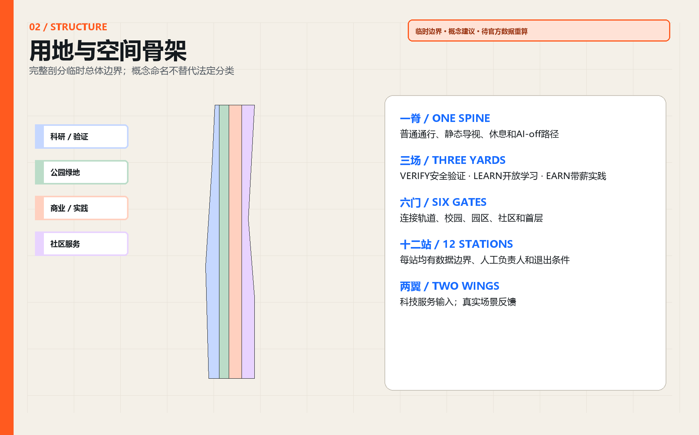
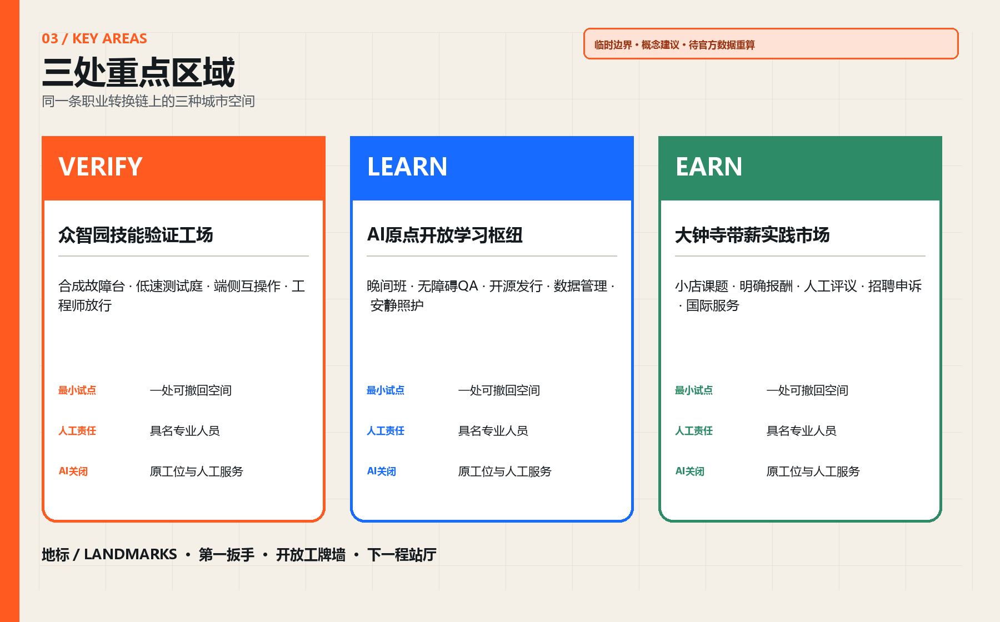
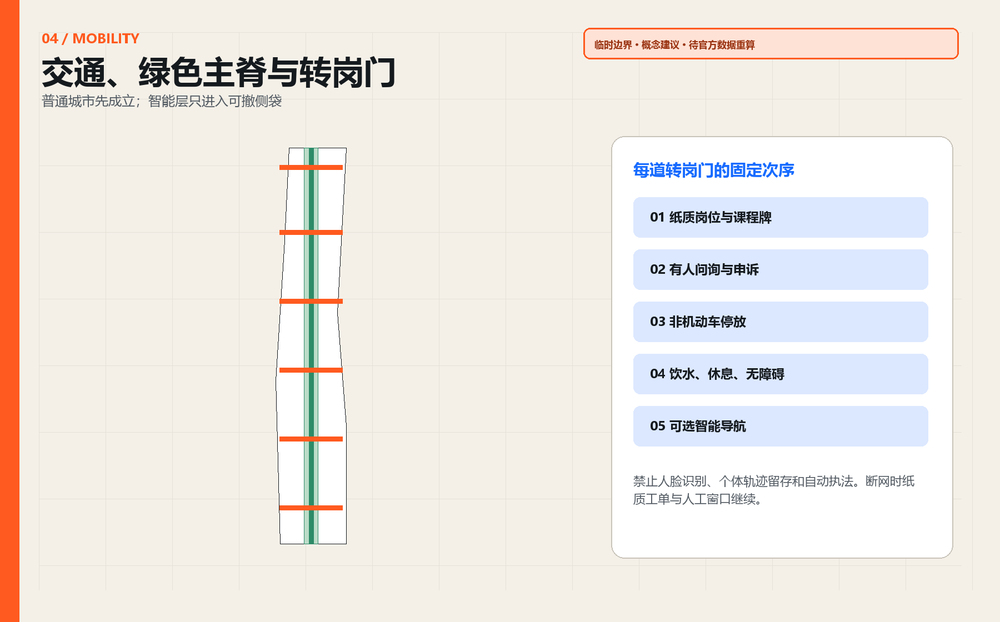
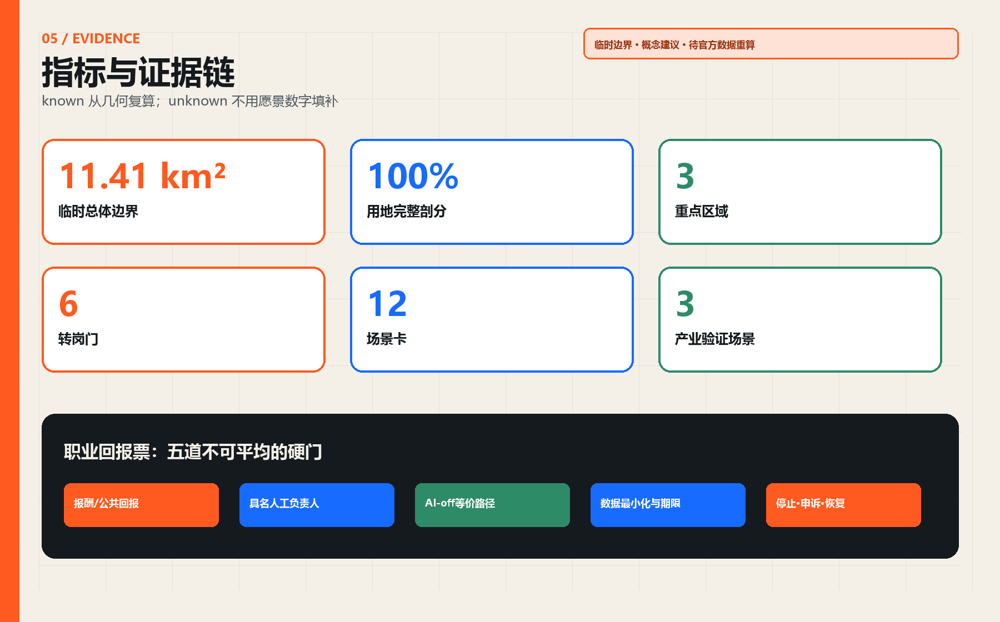

VERIFY
众智园技能验证工场
先证明安全、人工接管与职业价值。
JING-ZHANG AI INNOVATION BELT · OPEN-SOURCE URBAN DESIGN
AI创新的第一份公共回报，是让正在工作的人也能跟上。
01 / FRAMEWORK
先证明安全、人工接管与职业价值。
让在职者在晚间、周末和项目中学习。
把真实课题、明确报酬和人工评议放在同一首层。

02 / KEY AREAS

03 / SCENARIOS
04 / DELIVERY

05 / EVIDENCE

本页面全部离线运行，不加载远程脚本、地图、字体、API、iframe、表单或分析工具。所有边界均为临时粗略约束。
06 / SUBMISSION AUDIT